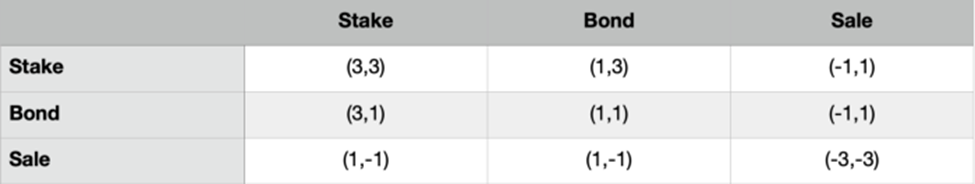

staking
Maximizing Returns with Staking
Staking is the primary value-accrual strategy of many DeFi protocols. For Asgard, users would stake
their $Asgard through Asgard’s dApp website to earn rewards. These rewards derive from bond sales
proceeds and may vary based on the number of Asgard staked within the protocol and the reward rate
which is set by an algorithmic monetary policy.
When you stake, you
1. Lock in Asgard and receive an equal amount of sAsgard.
2. Your sAsgard balance then rebases up at the end of every epoch automatically.
3. sAsgard can be eligible to be transferred so it is composable with other DeFi protocols.
To do it is easy!
1. Go to the Asgard website and select “stake.”
2. Send your Asgard to the staking contract and receive sAsgard at a 1:1 basis.
Remember that sAsgard is a transfer-restricted rebasing token so it’s not meant to be traded or used
for anything except holding.
Unstaking
When you unstake, you:
1. Go to our website and select “unstake.” Send sAsgard back to the staking contract to receive
Asgard at 1:1.
2. Burn your sAsgard and receive an equal amount of Asgard.
3. Unstaking also requires the user to forfeit the most recent rebase as an exit fee.
Rebasing
In cryptocurrency, rebasing is the process of adjusting the value of a derivative (sAsgard) to its
underlying base (Asgard).
Because Asgard's protocol distributes Asgard by sending them to the staking contract without asking
for sAsgard back, this increases the ratio of Asgard staked to sAsgard outstanding. Thus, resulting
in a rebase to correct the difference.
For example: there are 100k Asgard staked and 100k sAsgard outstanding. The protocol produced $5k
profit for the day, which it uses to mint and back 5k Asgard. It sends those Asgard to the staking
contract; there are now 105k Asgard staked and 100k sAsgard outstanding. sAsgard supply needs to
increase by 5k, or 5%, to return to balance. So, sAsgard is rebased up by 5%.
Rebases occur retroactively. For example, at the end of epoch 10 triggers a rebase of profits from
epoch 9. This delay lets you see what you’re missing if you want to unstake or what you’ll get if
you want to stake.
The reason to stake — Compound Interest
Annual Percentage Yield (APY) is a measurement of compound interest. This is different from Annual
Percentage Return (APR), which is a measurement of simple interest.
Staking on Asgard allows users to receive compounded returns automatically. When users stake Asgard,
they receive sAsgard. sAsgard represents our staked Asgard. sAsgard can always be exchanged 1:1 for
Asgard, but it rebases to reflect profits. This means we can compound; for example, every day of our
first week we rebased ~0.45% per epoch. If you held 100 Asgard, your first rebase of the week was
0.45 Asgard and your last rebase of the week was 0.49 Asgard. This is a 10% increase in yield! If we
had simple interest, every epoch would be 0.45 Asgard.
bonding (1,1)
What are Bonds?
Bonds refer to the process of trading Liquidity Provider (LP) tokens for Asgard tokens at a discount
(below market price).
With Asgard, the process of purchasing bonds has been simplified to a one-step process. Instead of
having to purchase the LP tokens then trading them for Bonds, users only need to have the asset-pair
(BUSD + Asgard) in their wallet to purchase the bonds directly.
Bonds are vested for 5 days and are paid out per block height. For example, if you were to purchase
a bond, after the first day you would have received 20% of the vested amount; then 40% after the
second day, etc.
Why Bond?
Simply, it allows you to buy Asgard at a lower cost basis. In return for selling your asset-pair
(LP), the protocol will sell you Asgard at a discount. The idea here is that bonds will give you
some amount more Asgard than you would have received if you had bought on the market and then
staked. The amount of “how much more” will be determined by how many bonds there are already
available.
Let’s walk through a bond example
1. When the price of Asgard is $500, and you have $1,000USD. With that cash amount money, you are
able to go and buy 2 Asgard and stake.
2. Staking will yield ~0.6% per epoch, and so during a vesting term (15 epochs), your stake will
increase from 2 Asgard to 2.185 Asgard.
3. If the bond price is $450, instead of buying outright, you could buy 1 Asgard for $500, add 1
Asgard and $500 to the pool, and bond the liquidity share you got back for a locked in 2.22
Asgard.
4. Over the next five days, you can claim those Asgard's as they vest, until term completion and you
have the full amount.
5. Strategy gets interesting when you factor in the rewards from the bond!
6. Before the end of each epoch, you could claim the accrued rewards and stake, which means you get
both the discount and the staking rewards.
7. Or else you could, at the end of the term, add the 2.22 Asgard plus $1110 to the pool to get new
LPs and create another bond.
8. Doing this will lower costs because you already got your Asgard at a discount and you’re now
getting yet another discount on the next round.
9. In this strategy you can do both:
1. Claim rewards and stake before the end of each epoch,
2. Then when you’re done vesting, unstake everything and rebond!
Creating a Bond
Go to Asgard’s website and select the ‘Bond’ tab. The protocol will quote the Asgard amount and a
vesting period for the trade. You would need to have the asset-pair (BUSD + Asgard) in your wallet
to purchase the bond.
Redeeming a Bond
On Asgard’s website, select the ‘Bond’ tab, then click on the submenu ‘Redeem’. The protocol will
recall when you bonded and your vesting term. If you have any pending rewards, you can claim them.
Rewards accrue throughout the vesting period.
Note: sAsgard is the protocol’s profit accruing token and
since bonders earn Asgard (not sAsgard), stakers earn 100% of protocol profits (minus the DAO’s
cut). See our staking article for more info.
Some key points on Bonding
Bonds give you the opportunity to buy Asgard from the protocol at a discount. Here are just a few
differences to keep in mind:
1.
You pay for Asgard with liquidity. This aspect helps the protocol
accumulate liquidity shares.
2.
NO Asgard up front. Instead, your Asgard is vested over the course
of five days. This smooths out market impacts from the new supply of Asgard.
3.
The demand for bonds will determine your discount. The bond
discounts increase when there are more bonds, and decreases when there are less.
4.
Once you bond, your LP commitment is locked. When you have executed
a trade, you have made the trade. Think of it as buying Asgard and committing to stake for 5 days
with a set reward rate.
bonding (4,4)
4,4 Bonds are very similar to 1,1 bonds, and are purchased in the same way as 1,1 Bonds, so please
read that page first. There are however a few small differences:
4,4 Bond rewards are paid in sAsgard instead of Asgard
This means that your bond rewards will compound as they are vested, meaning that you won't need to
stake them after you claim them.
4,4 Bonds have a single 4 day vesting period
This means that 4,4 bonds can only be claimed in their totality after a 4 day vesting period
4,4 Bonds are in shorter supply than 1,1 Bonds.
This is because they are generally more profitable and as such we need to control the dilution that
they would cause if left unchecked.
4,4 Bonds usually have a smaller discount than 1,1 Bonds
This is because in addition to the discount at purchase, people who buy 4,4 Bonds also benefit from
the compounding APY rewards applied to their sAsgard reward. So whilst immediate discounts are
lower, it can often be more profitable to purchase a 4,4 Bond than a 1,1 Bond.
The buying process for 4,4 Bonds is identical to the process for 1,1 Bonds except for the fact that
you'll need to select a 4,4 bond.
Wrapping (wsAsgard)
What is wsAsgard?
Users can choose to wrap their sAsgard, which converts it to a standardized BEP20 token. Instead of
your token amount increasing, the value of wsAsgard itself increases. This allows you to gain the
rewards you would normally gain from Staking, without having an increasing amount of tokens in your
portfolio.
sAsgard cant be used to create LP where as wsAsgard can be used to create LP in Pancakeswap with any
other pair .Thus you can earn more rewards from wrapping.
Users can also unwrap their wsAsgard tokens to receive sAsgard at any time.
Why is this relevant?
In many countries, there is a clear distinction between Income Tax and Capital Gains Tax.
Income Tax applies to
regular income, usually received for work done or investments.
Capital Gains Tax
applies to money gained from (for example) the sale of an asset like a house or investment.
In many cases, Capital Gains Tax is lower than Income Tax, and so it would be diligent to make it as
clear as possible to the taxation authorities of your country/jurisdiction that the income you
receive from ASGARD is a Capital Gain rather than an Income.
How does it work?
Users can wrap their sAsgard tokens on our dashboard.
The wsAsgard token price is calculated as follows:
s AsgardPrice*index
The price of sAsgard is always equal to the price of Asgard, and the Index is a number used to track
the value added to a staked token by rebase rewards. Therefore, the price of wsAsgard will increase
as if it were rebasing, without needing to rebase.
Asgard Game Theory
Many of you may have heard of movies Avengers, Thor, Marvel Ultimate Alliance 3, The Myth of Loki
and the Deadly Mistletoe that mentioned Asgard, then you can understand that Asgard is the dwelling
place of gods just like Greek Mount Olympus.
In Asgard, every important god had his own palace and the design of these mansions were similar to
their own nobility. After this brief introduction, Let’s talk about (3,3) in our platform ‘Asgard
DAO’.
(3,3) is the idea that, if everyone cooperates in Asgard DAO, it would generate the greatest gain
for everyone.
Currently, there are three actions a user can take with a different effect on the protocol.
Staking — most beneficial to the protocol (+2)
Bonding — somehow beneficial to the protocol (+1)
Selling — detrimental to the protocol (-2)
Staking and selling will both cause a price move, while bonding does not (we consider buying ASGARD
from the market as a prerequisite of staking, thus causing a price move).
If both actions are beneficial, then the main action that moves price also gets half benefit
(+1).
If both actions are contradictory, the bad (selfish) action that moves price gets half benefit (+1),
while the good action that moves price gets half of the downside (-1).
If both actions are detrimental, which implies both actions are selling, then both get half of the
downside (-1).
Thus, above mentioned two actions, all scenarios of what they could do and the effect on the
protocol are shown here:

If we both stake (3, 3),
it is the best thing for both of us and the protocol, both actions get 2+1 points, 3 + 3 = 6
If one of us stakes and
the other one bonds, staker is the good action who moves the price, hence gets 2+1, while bonder still
gets 1, 3+1=4
When one of us sells, the
other one stakes, the seller is the bad action that moves the price gets half of the benefits, hence
-2+1, while stakes is the good action that moves the price too gets half of the downside: +2–1,
-1+1=0
When one of us sells, the
other one bonds, seller is the bad action that moves the price gets half of the benefits, hence -2+1,
while bonder doesn’t move the price still gets 1, -1+1=0
When we both sell, both
move the prices and get the downside, creating the worst outcome for both of us and the protocol, (-3–3
= -6)
Don’t read too hard into the numbers. It simply means to demonstrate the framework created by
cooperation. Actual dynamics will strengthen or weaken depending on many factors as well. But it doesn’t
change the idea that the best strategies are all cooperative.
Power of Internal cooperation is amplified even more in digital economy.
In terms of materials economy, what is being produced is tangible, limited supply goods. Price
coordination (supply/demand) determines the optimal distribution of these goods.
But in digital economy, supply and demand cannot determine the optimal distribution of what is being
produced, because what is being produced are ideas, information, and infrastructures, which do not have
limited supply in the same way.
Price is only one kind of idea, information, and infrastructure, and not necessarily the most predictive
or determinate motivating factor. And therefore internal coordination is more important than price
coordination in digital economy.
It is only when a certain threshold of team coordination is reached that the economic productivity of
ideas is then externalized into price coordination of Asgard DAO.